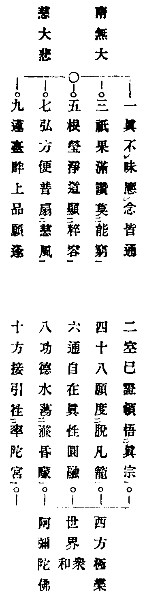
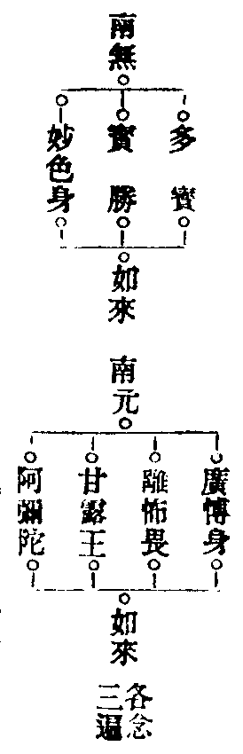

高峯龍泉院因師集賢語錄卷之七
諸般佛事門
發道文(此係遇人新喪就士。人所召引亡魂徃生佛地及安慰靈座用)
(唱和)極樂世界(眾和)彌陀佛(四聲)觀音菩薩(眾和)摩訶薩(四聲)勢至菩薩(眾和)摩訶薩(四聲)海眾菩薩(眾和)摩訶薩(四聲)。
切以色身如夢。浮世非堅。其生也石火電光。其死也波澄水淨。于日即有新故(某甲)世緣已盡。命謝还空。猶慮敷排棺槨結束衣冠。未蒙清淨有諸穢污。今憑法水灌洒行裝。悉令清淨俱獲嚴潔。 (淨水)貪言依教持誦。 (伽陀)
(淨水真言曰)唵拔折羅舍尾吽吽(三遍)
恭聞人生有限。逐光景以蹉跎。世事無根。任浮葉而迅速。假使神丹九轉印緩千鍾。縱獨戰獨興至烏江而自刎。任七擒七縱嘆孤境以空存。徐寅賦言不死何皈。武帝詩云長生不見。誅龍好手斬獸嘍囉。不知一性圓明。徒逞六根貪欲功名。盖世無非大夢一場。富貴驚人難免無常二字。雷興電滅月落花殘。溪山磨盡幾英雄。風火散時無老少。于日即有新故(某甲)傾辭人世奄化泉鄉。恐在冥途慮生沈滯。今為稱楊聖號。指出迷津。韻擊洪鐘。振開幽壤。仰憑法眾。恭阿彌陀接引新魂超昇樂國。(於此動法音讚唱)

惟願接引新故(某甲)泉下去魂。上嚴天界。
切以運慈缶於苦海莫若大雄。秉惠燭於昏衢無非調御。昔時大蠎離苦由郗氏聞諸佛供名。曩日枯魚上天因流水稱寶勝名號。此七大如來是四生慈父。廣弘誓願救拔死生。一稱其名萬罪俱滅。有是利益故乃宣揚。伏冀尊靈志心諦听。

惟願接引新故(某甲)泉下去魂。上嚴天界。
百年光景全在剎那。四大幻身豈能長久。任是堆金似塔。命終而難買長生。假饒積玉如山。限盡而安能延壽。豈不見南鄰公子綠鬢改而白髮生。北里豪家昨日歌而今日哭。人命似風前之燭。浮生如火裏之氷。夫子為六國之師由歸泉路。世尊是三界之主尚奄双林。堪嗟古聖今賢。難免出生入死。于日即有新故某甲。壽齡大限幻化歸空。繐幃伸薦拔之誠。緇侶盡虔恭之禱。念無生偈。擊無常鍾。願沐殊勳。超昇樂國。
(諷)諸行無常 是生滅法 生滅滅已 寂滅為樂
如來證涅槃 永斷於生死 亡者志心聽
當得無量樂(各和三遍)
(唱云)第一鐘聲上通三十三天。第二鐘聲下達一十八地。第三鐘聲接引新故某甲上嚴生界(咄)。
(諷彌陀呪)亡魂承呪(和)生天界。
開明文
(唱)一切恭敬信禮(和)常住三寶(任舉佛號)。
紫金嚴相。白玉舒毫。頂旋千螺。身分百億。謹熱明香恭伸敬白。十方盡虗空界三世過現未來一切無窮佛寶法寶僧寶。萬靈有感天官地官水官。四直功曹三界奏事。冥司五道大神。追押二魂使者。黃衣業道神君。奈何渡江使者。家先宗祖住宅神祇。惟願降赴法筵。鑒斯丹懇。即據大元國某[火*月]某縣鄉居里號住止陽道孝某甲。伏為亡某甲享年幾歲。於今月幾日傾辭世壽奄化泉鄉。命僧於家鳴鐘發道。猶慮人物往來踐踏宅舍。擊鼓動鍾諸般哭泣。冐犯家神恐生驚怖。今依教典奉法行持。摒起一宅神祇四圍禁將。伏請諸神懸空而立。喪車過後回鎮方隅。秘密妙言依教持誦。 (伽陀)
(淨水去穢真言曰)唵佛咶啒律摩訶鉢囉恨那碍吻汁吻微咭微摩那栖鳴[琛-王+口][口*暮]啒律吽吽[口*半][口*半][口*半]娑訶
上來持誦威跡密言阿伽香水。摒起住宅家神已竟。輙備銀錢先伸奉上冥司五道大神。追押二魂使者。黃衣業道神君。奈何渡江使者。伏惟歆納。然後待吾鳴鼓之時。伏願諸神眾接引新故某人。超昇樂國。為念摩訶般若波羅蜜(動鈸至柩前舉)西方極樂(眾和)彌陀佛。
(呪)彌陀淨土呪三遍。(舉)亡魂承呪(眾和)生天界。
切以一真湛寂本無去以無來。萬象浮華是有生而有滅。故我仲尼大聖猶夢奠於兩楹。達磨宗師尚飛歸於隻履。凡曰古今之賢聖。莫逃生死之輪迴。是日即有亡某人。乍入冥途。希聞佛法。今為靈魂稱揚三寶。頓爽六塵。伏請志心諦聽。志心聽受。(就舉)
南無佛陀耶 南無達摩耶 南無僧伽耶
歸依佛無上尊 歸依法離慾尊 歸依僧眾中尊
歸依佛竟 歸依法竟 歸依僧竟(各和一遍)
歸依佛者不墮地獄。歸依法者不墮餓鬼。歸依僧者不墮畜生。從今已往稱佛為師。稱法為師。稱僧為師。更莫歸依邪魔外道。惟願三寶慈悲攝受。吾今更為持誦七大如來資薦香魂。願超淨界。伏請亡靈志心諦聽。志心聽受。(於此舉)七寶如來名號(各和一遍)。
(伽陀)
(真言曰)唵三昧耶薩哆[口*梵](舉)超佛界菩薩(眾和)摩訶薩
切聞昔佛住世利樂四十九年。教法流通滅度二千萬載。不生者西方而無去。不滅者東土以無來。滅已可聖可凡。生而不增不減。于日即有亡某人。世緣既滿。宿果已周。娑羅開覺樹之花。法樂奏無生之曲。莫不孝門東苦眷屬悲傷。然諸佛却有微宗。使眾生總無失本。大眾。法若永盡無生。思而不足了然。常興不滅。懼死何歸。當念無常。聽吾舉偈。亡者志心。應當諦聽(於此誦涅槃偈)。
切以西方有佛號曰彌陀。樹林水鳥演法音珂。喝開耳聞身振娑婆。金容蓮掌垂慈悲。示度亡靈出愛河。現前清眾異口一音。同聲讚和十佛名號。資助去魂超昇淨界。亡者志心應當諦聽(於此舉十念彌陀名號)。
上來稱揚十念功德已竟。敬薦亡某人。泉下初終冥路去魂。願超淨界。伏願華臺幡蓋空裏來迎。玉輦金幢昇騰接引。頂禮奉辭(眾和)和南聖眾。
切以冥魂杳杳初無再見之期。泉路茫茫寧有重歸之日。重念此生之泉別。用憑薄奠以哀辭。仰冀一靈俯歆三醉。伏請孝眷虔誠開壺酌酒(舉柳含烟調)。
二奠滿金杯。親姻哽咽悲哀。憑僧略為薦泉臺。願早往生來(至此動鈸擊鍾三下。隨聲舉唱彌陀聖號。終云惟願接引亡靈上嚴生界。未司發道)。
祭奠文(發端隨意 舉佛)
盖聞大圓遍智速證總持之門。唐藏流輝弘敷秘密之跡。實有難思之德。能無上道之功虔寶印之律儀叩金仁之剋薦。庶憑微妙之力。容霑歆享之筵。恭對靈幃宣揚聖教。伏冀尊魂如在靜听真言。法食飽食永充飢渴。甘露王飾饌施食陀羅尼謹當持誦。孝眷上香設拜。
南無薩哩嚩怛多阿誐佐婆嚧枳帝唵麼囉麼囉三麼囉三麼曳吽(三遍)
南無蘇魯婆曳怛馱惹哆耶怛枳他唵蘇魯嚩囉蘇魯嚩囉蘇魯娑婆訶(三遍)
真言演處愁雲慘慘於長空。聖號宣時憂霧紛紛於永日。斯辰即有孝眷某。伏為新故某人。魂歸岱岳。魄奄泉扄。孝女悲而九族傷嗟。孤子哀而六親哽咽。是以特嚴祭奠。敬獻靈筵。贈別尊魂。用資去識。孝眷慇懃跪獻。緇徒特為讚揚。 (唱)大聖甘露王菩薩。
南柯一夢不能回 孝眷微誠特寓哀
香爇沈檀薰寶炷 酒傾醹醁捧金盃
苦聲苦恨哀纏臆 悲憶悲思淚滿顋
惟願英魂垂饗納 特憑妙偈薦泉臺
切以幽明隔遠生死分離。生前既屬親姻每勞眷顧。死後若無奠禮難表初終。庸竭丹誠。輙修素饌。一曲法音陳一奠。三乘雅韻薦三魂。特酬有德之情。用答無違之義。伏願尊靈不昧歆享誠心。侍孝停悲虔恭酌献(搗練子調)。
一奠酒。執瓶斟。亡魂不昧鑒來歆。請起盞初巡。
二奠酒。實馨香。靈前祭饌列成行。魂識願歆甞。
三奠酒。滿十分。靈魂不昧鑒如存。承此禮慈尊。
聊伸三奠 特表一誠 輙有祭文 對靈宣讀。
上來祭狀宣揚已竟。伏望尊魂歆承享鑒。然祈孝眷某。敬詣喪門侍服解夢折災而禍隨時散。返迴家舍卸衣迎祥集福而祿逐日榮。眷屬平安。門庭光顯。仰祈靈座普賜護持。勞鎮孝堂伏惟珍重。(舉)超佛界菩薩摩訶薩。
讚祭文(發端舉彌陀佛)
盖聞如來行化。毫光遍布於乾坤。菩薩修因。弘誓普周於沙界。既有昇騰威德。寧無超度幽魂。冥途杳杳以難資。泉路茫茫而何託。死門深切無祭何以送其終。親眷至情非奠何以表其禮。營辦六和餚饍。精修三德盤筵。惟憑梵唄。是假密言。變常食為玉饌珍饈。化冥財作銀鉄金鋌。祭尊靈獲飽充之樂。潤幽魂足豐富之榮。誦甘露王施食陀羅尼。灑閼伽乳灌炷飩[飢-几+它]味。能令魂識歆飡皆成甘露。致使幽徒沾享盡是醍醐。宣揚真呪敷遍盤筵。亡者志心應當諦听。 諷(真言同前)。
祭奠文
切以金言宣演詠祭饌以豐濃。寶鈸喧轟助靈魂而歆享。既獲飽充之德。未聞超度之功。慮性天而黯淡。恐心地以昏曚。無憑指引難假精通。幸諸佛有慈悲之路。許群情來雪釋之功。集七六如來。是四生慈父。一稱其名。萬劫離苦。昔日流水長者謂十千遊魚宣持聖號。是時後歸命終為十千天子獲壽無疆。故知利益乃可稱揚。亡者志心應當諦听。 (舉)七寶如來聖號。
下乎乎唵三牟尼野娑訶(三遍)
願滅冤[狂-王+(替-日+心)]諸業障 願生精進悟覺場
願圓種智妙難量 願獲如如證真常
下乎乎唵逸帝律尼娑訶(三遍)
真詮奧典聞誦而福長災消。秘密妙言聽演而冤超罪滅。伏願靈魂承茲祭奠。常生飽滿之情。永絕飢虗之相。迢迢自在越三天。歷歷逍遙超十地。三魂不昧。七魄儼然。勞駕雲程。伏惟珍重。(舉)生天界菩薩(和)摩訶薩。
召亡文(附設俗儀)
切以冥途杳杳泉路茫茫。悲風動處冷颼颼。陰氣逼人寒凜凜。自從亡魂拋棄宛若夢中。生前萬種營謀。死後一無隨侍。七魄不知何往。三魂未卜生方。不憑我佛慈悲。難使靈魂度脫。今則尤慮幽魂沉滯未獲降臨。惟仗金鈴振開幽壤。今準教文有破地獄真言。即當持誦。
唵佉囉佉囉帝野娑婆訶
上來持誦開地獄真言已竟。惟願呪力促起行程。望冥官而略展慈悲。仗使者以曲垂方便。受今虔請。接引亡魂來降道場。領霑功德(舉伽陀後念普召請真言三遍)。
以此振鈴申召請 亡魂不昧悉遙聞
願承三寶力加持 是夜今時來降赴
(念普召請真言)。
是夜銀河浪徹玉漏聲催。空中之星斗交輝。門外之輪蹄暫息。適陰界往來之際。乃人聞薦悼之時。爐煙焚慘淡之香。梵語舉慈悲之韵。欲召一靈降赴。須憑三請慇懃。伏冀眾慈。齊聲攀請。
一心奉請冥司引魂使者。當界土地正神。惟願輙勞神眾憐愍凡情。引請亡某人香魂。伏願靈魂不昧。淨魄如存。承佛力以來臨。假神旛而引至。一真瑩淨。五福澄清。來降道場。(和)受茲薦悼。
一心再請引魂使者。土地正神。惟願神功有感。聖德無遺。引請亡某人尊魂。伏願魂如在日。魄似生時。憑法力之弘深。仗佛慈而接引。三途永息。六趣齊超。來降道場。(和)受茲薦悼。
一心三請冥司引魂使者。當界土地正神。惟願神光叶讚。聖跡通靈。引請亡某人親魂。伏願憑茲法水洗蕩身心。滌萬慮以俄空。使一塵而不染。三魂自在。七魄如生。來降道場。(和)受茲薦悼。香花請。香花請。
上來仰感神威不違啟請。引領亡某人。英魂不昧已獲降臨。伏請嚴整容儀。趍赴筵中。參禮三寶。瞻仰萬靈。然後就座安然。歆誠薦悼。運動鈸音真言前引(如置亡俗則去此一畏。如不置亡俗只就此引進參佛)。
上來憑諸佛力攝召亡魂。既荷降臨。請入香浴。某浴也惠香熏就。性火烹來。浸淫於七寶瑤池。成就以八功德水。蕩去千生垢穢。滌除萬劫昬蒙。不隨六道輪迴。獨露一真清淨。雖法躰本來無垢。然聖人猶且洗心。昔因淨梵國王曾浴釋迦太子。若有一塵不淨。難親三寶慈尊。惟憑呪力加持。令汝身心俱潔。我佛教中有沐浴真言。謹當持誦。
南無三滿哆沒駄喃唵毗鉢枳哩薩訶(三遍)
到波羅岸必假慈舟。出生死河須憑慧力。由慮亡魂久拋人世。長處幽途。忙忙比對王庭。汩汩滯拘陰府。是致衣衫繿縷。儀禮乖疎。裸露身形腥膻臭穢。今宵追崇功德。誠心倘不精嚴迓命。合會聖賢慮恐穢身觸犯。特備冥衣一統財帛等物。恭就此間焚化献上尊魂。伏惟領納。輕輕梳掠欵欵裝嚴。整頓衣裳結束冠帶。然後親近佛法。領受良因。我佛教中有化衣帛真言。謹當持誦。
南無三滿哆沒駄喃盤遮那毗盧枳帝娑訶(三遍)
沐浴既畢。裝束云周。靈魂當倚神旛。侍孝虔恭跪拜。大眾誠心而前引。尊魂竭意而後隨。歸赴道場。親承薦拔。高揚法樂。運動潮音。恭謹一心。歸依三寶。
適來憑諸佛力。仗秘密言。於門首攝召亡某人。真魂正魄親降來臨。常聞三寶諸佛洪名聖號。即是一切眾生良友福田。若能歸向者即滅無量罪。又長無量福。然雖如是。瞻仰慈尊。放下塵勞。聽吾諷誦。亡者志心諦聽。志心聽受(支聲念至參佛具言上)。
一禮一拜無量佛。從佛禮處禮真如。普禮真如遍法界。(眾和)河沙罪障悉消除。世世常行菩薩道。
二禮二拜微妙法。從法禮處禮琅函。普禮琅函遍法界。(眾和)河沙罪障悉消除。世世常行菩薩道。
三禮三拜羅漢僧。從僧禮處禮聲聞。普禮聲聞遍法界。(眾和)河沙罪障悉消除。世世常行菩薩道。
今之夜亡過某人。參禮三寶竟。罪障一切消。惟願將此身心。利有情求解脫。(和)
敬白亡過某人。參禮三寶已竟。伏請隨吾揖讓。遶旋一匝瞻禮萬靈。然後歸靈就座聽法聞經。從茲改往修來。更勿迷頭認影。堅持戒定慧。斷息貪嗔癡。捨凡身而證法身。超人道而歸佛道。侍孝慇懃。隨吾引進(揖亡從右進參左聖。復從左進參右聖。然後歸靈所)。
尊魂既降 淨魄歸靈 教有真言 用伸安慰
(念安慰真言三遍)。
安然定坐 領受薦修 聽佛梵音 頓超淨界
高峰龍泉院因師集賢語錄卷之七